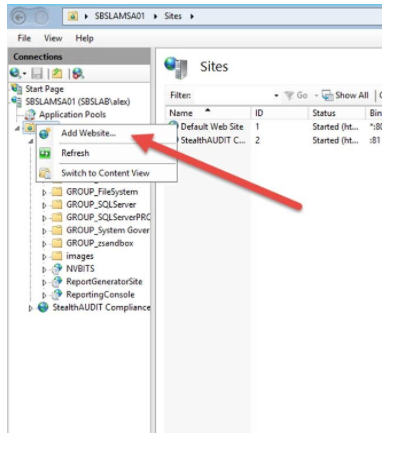
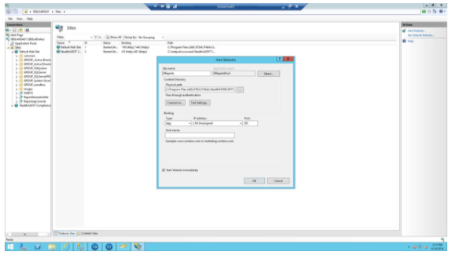
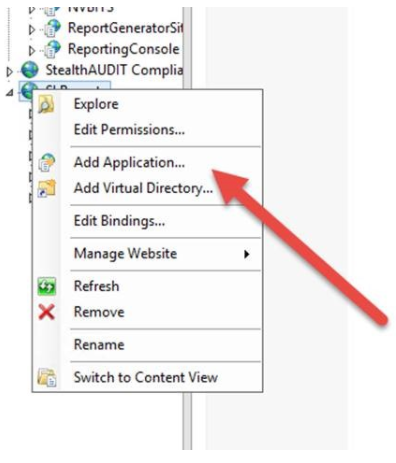
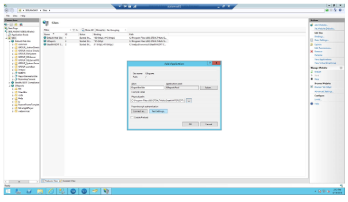

Summary: How to create the StealthINTERCEPT Reports site in IIS
Issue: How to create the StealthINTERCEPT Reports site in IIS. Useful if the original site doesn't work or if you want o put the site on a different port.
Instructions:
Add new website:

Configure settings:
Set application pool to SIReportsPool
Set physical path to C:\Program Files (x86)\STEALTHbits\StealthINTERCEPT\SIReports\ReportingConsole
Set desired port number (set to 85 in this example)

Add additional application under new site:

Configure application:
Set application pool to SIReportsPool
Set physical path to C:\Program Files (x86)\STEALTHbits\StealthINTERCEPT\SIReports\ReportGeneratorSite

Site should now be reachable by hitting http://hostname:85
Product: StealthINTERCEPT
Legacy Article ID: 1174